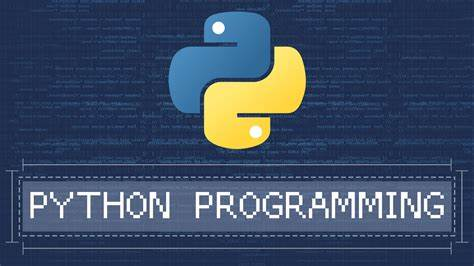
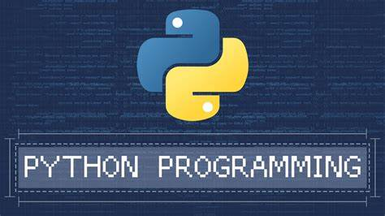
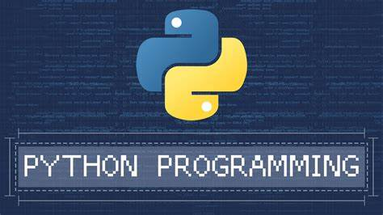

Programming Skills
 



"Welcome to my programming portfolio. I specialize in languages such as C, Python, and Java. Just as artists capture moments, I aim to craft elegant and efficient solutions through code. While my focus lies primarily in software development, I hope you enjoy exploring the intricacies of my projects!"
- Data Science and Machine Learning
- Web development
- c
- Python
- Java